Storyboard et Character design | Juin 2025
Tentacules et sortilèges
C'est un exercice de storyboard plus complet réalisé lors de ma 2e année de bachelier en arts plastiques, visuels et de l'espace dans les Arts numériques à l’ESA Saint-Luc Bruxelles. C'est un exercice dans lequel on doit inventer une histoire inspiré de l'univers d'Harry Potter pour y intégrer un nouveau professeur de défense contre les forces du mal dans un univers alternatif. Donc le travail global porte sur l'introduction du personnage dans l'histoire, imagienr sa première apparition. Cet exercice comprends les conceptions de personnages avec les character design, leur histoire, un storyboard et un plan topview. Le projet a globalement été réalisé dans Procreate sur Ipad
élève 1 (Félicia)
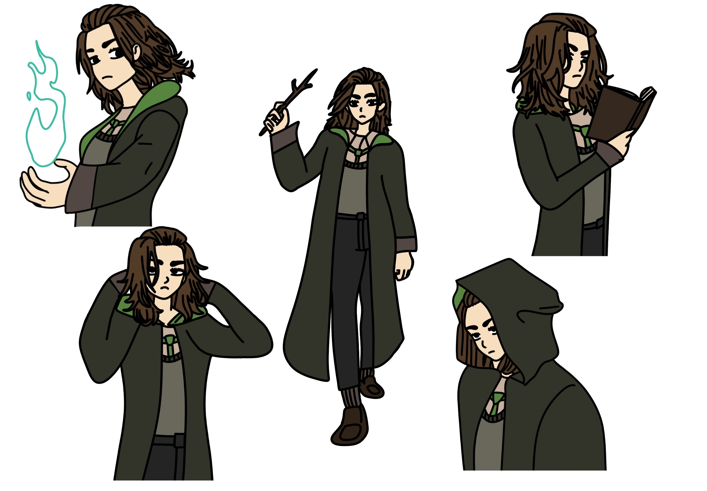
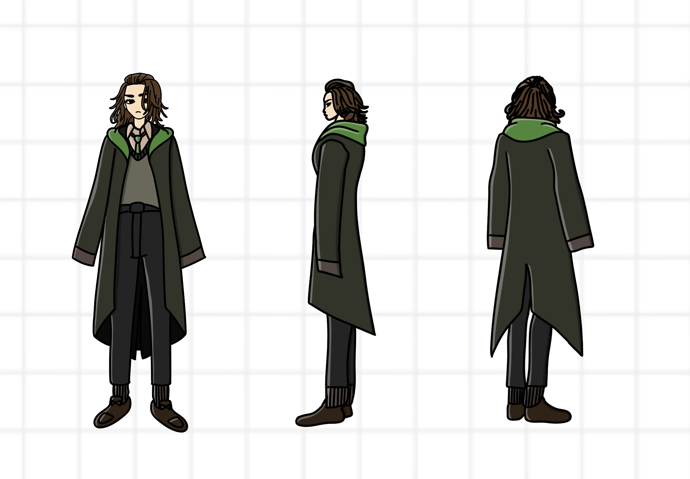
Félicia a 15 ans et elle est étudiante à l’école de sorcellerie où elle y apprend la magie. Elle n'est pas aussi perturbatrice que son meilleur ami Sid. Au contraire, elle est même plutôt silencieuse et discrète. Cependant, elle tire aussi souvent la tête que lui. Elle a plus de mal avec les sortilèges que Sid mais s'entraîne dur pour les maîtriser au mieux. L’apprentissage est plus lent pour elle. Par ailleurs, elle surveille légèrement ce que Sid fait parfois car il peut parfois aller trop loin dans ses bêtises en classe.
élève 2 (Sid)
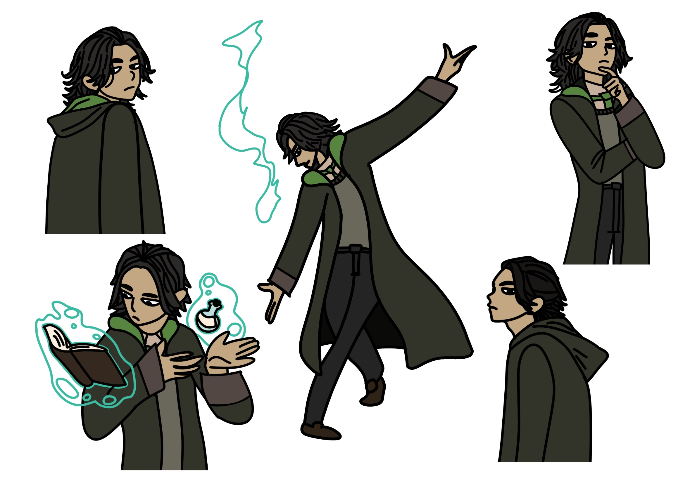
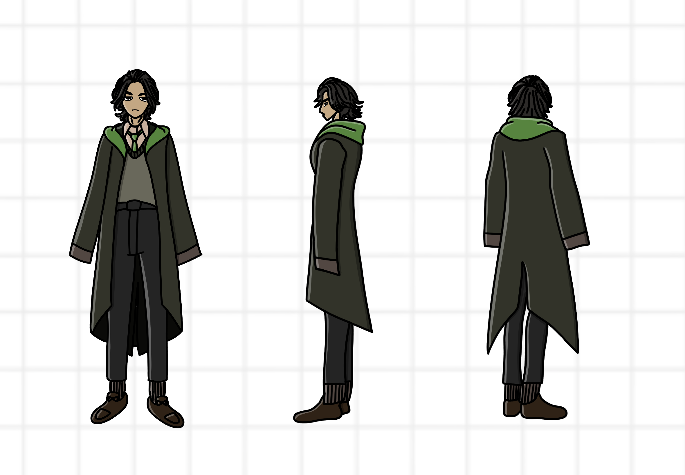
Sid a 14 ans et Il est étudiant à l’école de sorcellerie où il y apprend la magie. Il est du genre perturbateur dans la classe et l’air de râler constamment. Il est même très bavard de façon générale. Cependant, il est extrêmement doué avec les sortilèges qu’il a appris et sait s’en servir sans échecs. Il reste au fond de la classe avec Félicia, sa meilleure amie.
professeur Octopie
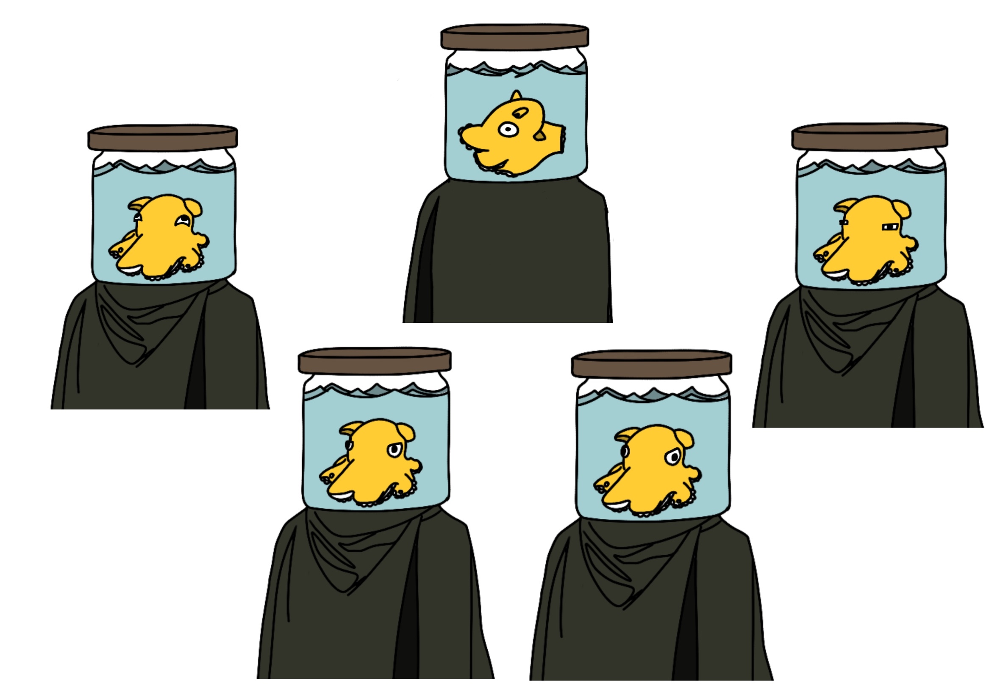
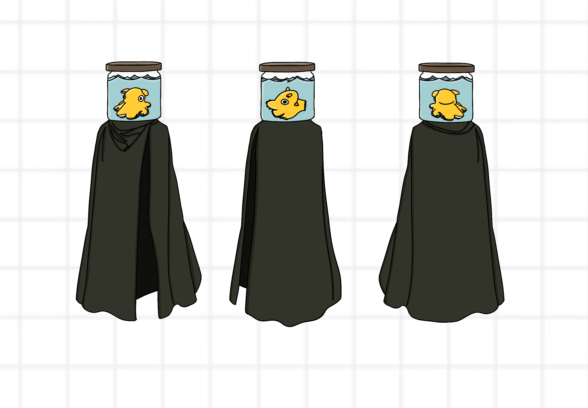
Le Professeur Octopie est un poulpe dans un bocal rempli d’eau chaude qui se déplace en volant à sa guise. Il a 8 ans et il peut parler comme n’importe quel humain sans aucune difficulté lexicale. Il a une plutôt bonne affinité avec ses élèves lors des leçons. Ce poulpe vient en réalité d’une expérience scientifique. Les savants ont réussi à implémenter une intelligence relativement poussée et proche de l’être humain qui est relié directement au poulpe. Ils l’ont ensuite mis dans un bocal en verre rempli d’eau froide. Les savants en ont profité également pour lui prolonger grandement sa durée de vie car elle est estimée à plus ou moins 2 ans initialement. Mr. Octopie a alors réussi à apprendre la magie et à décider d'apprendre à l’école des sorciers, puis devenir professeur par la suite.
Comparaison taille
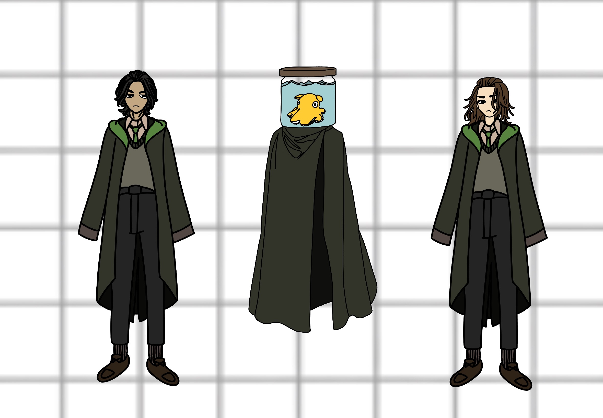
Plan TopView
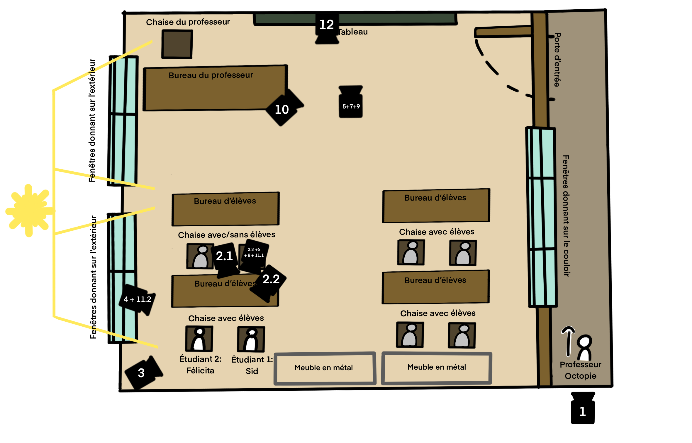
storyboard
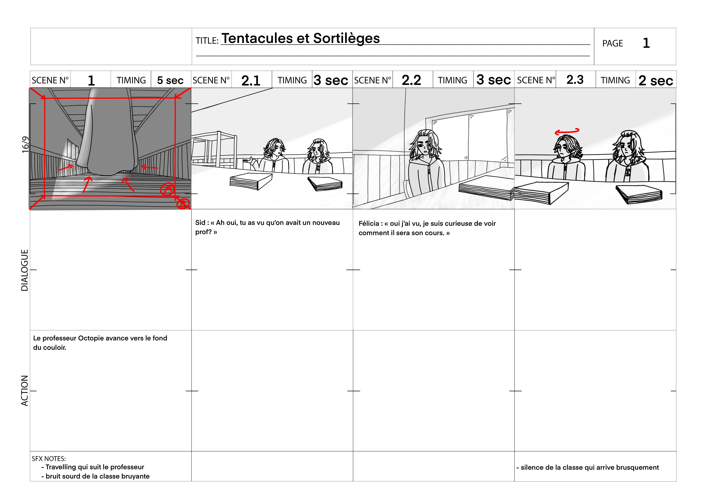
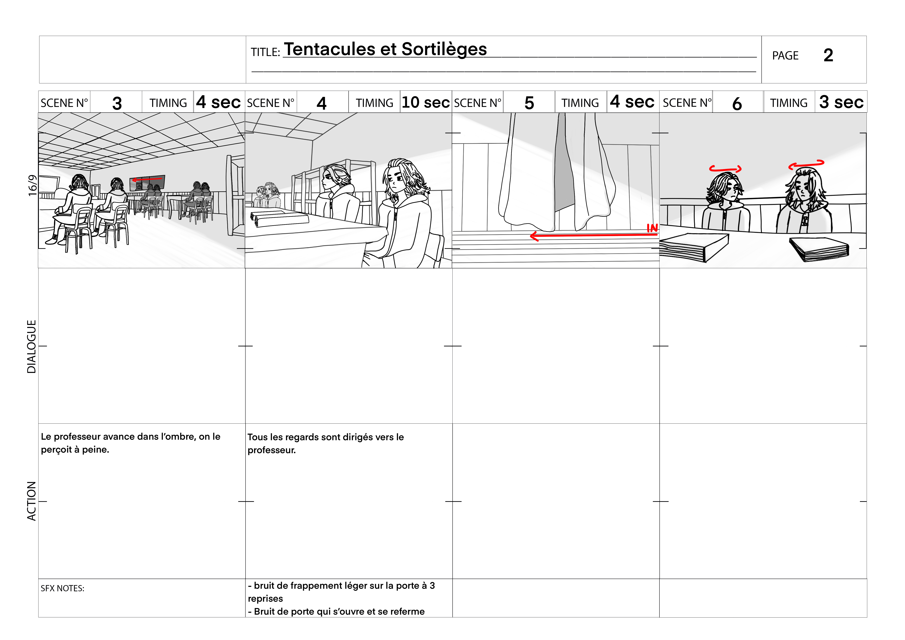
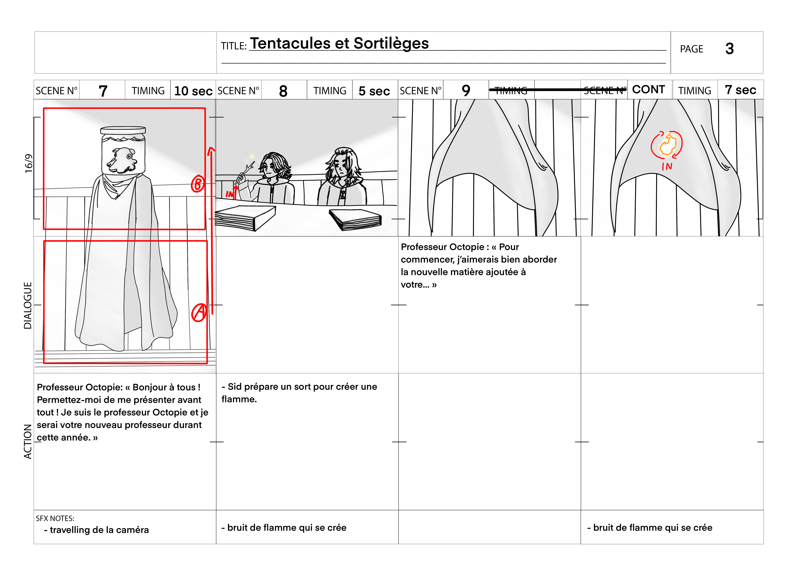
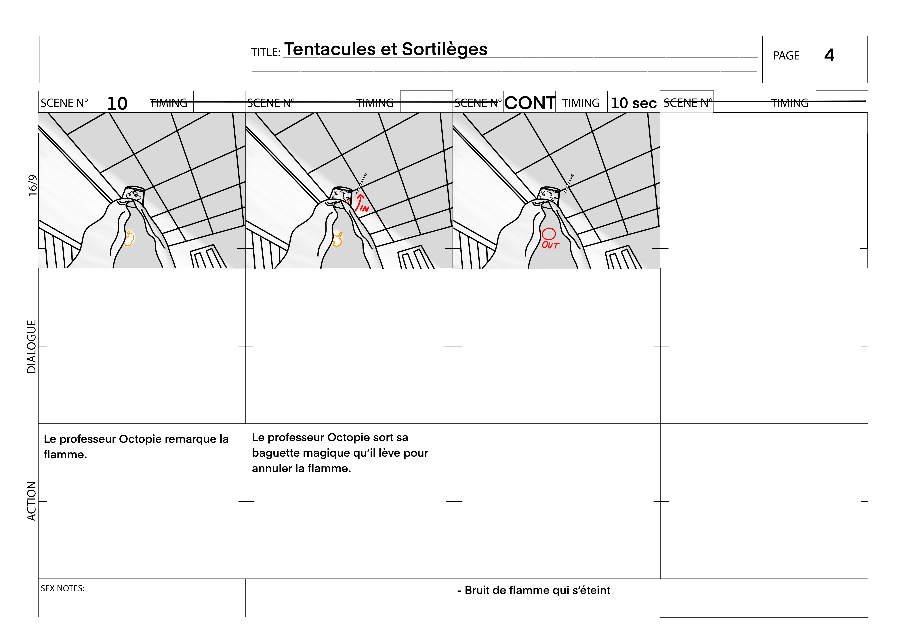
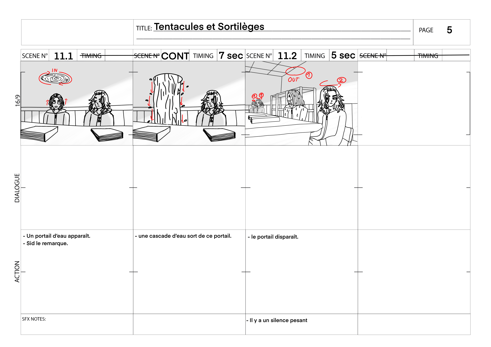
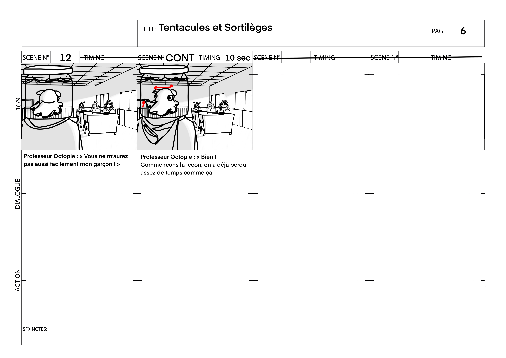